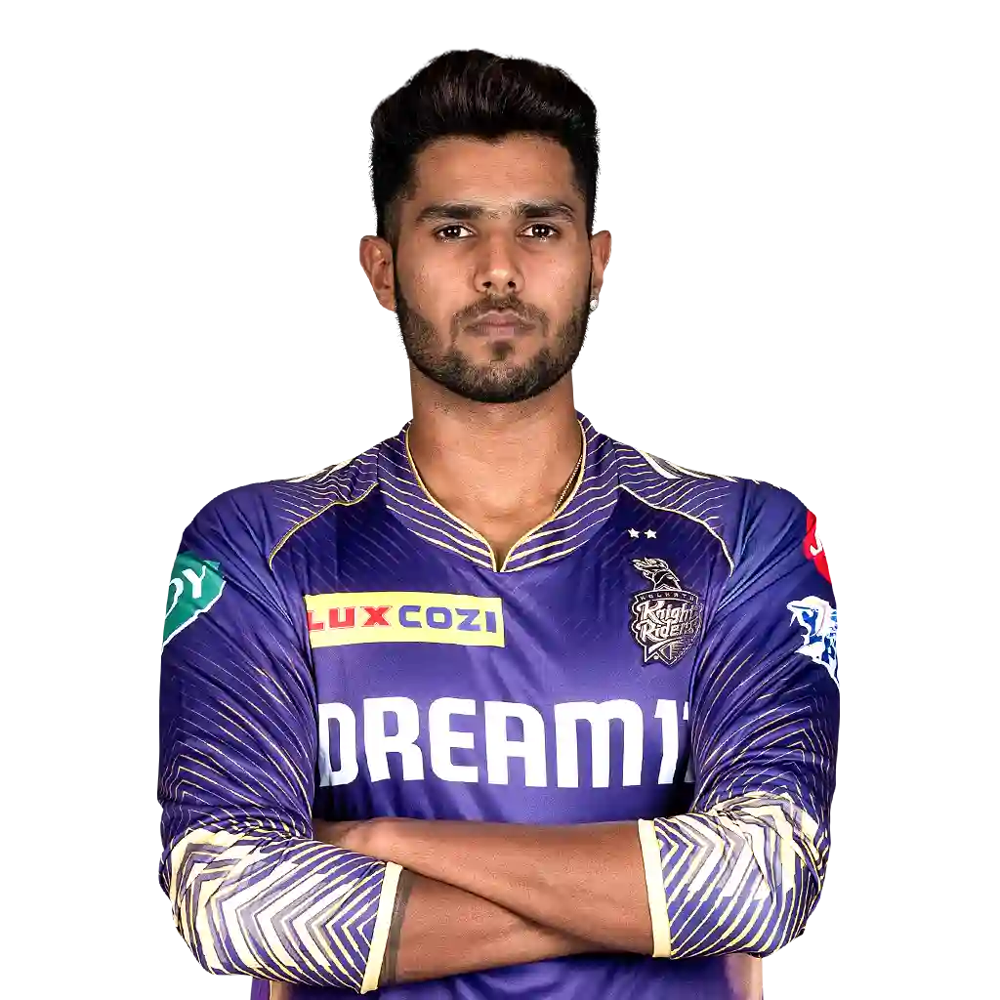
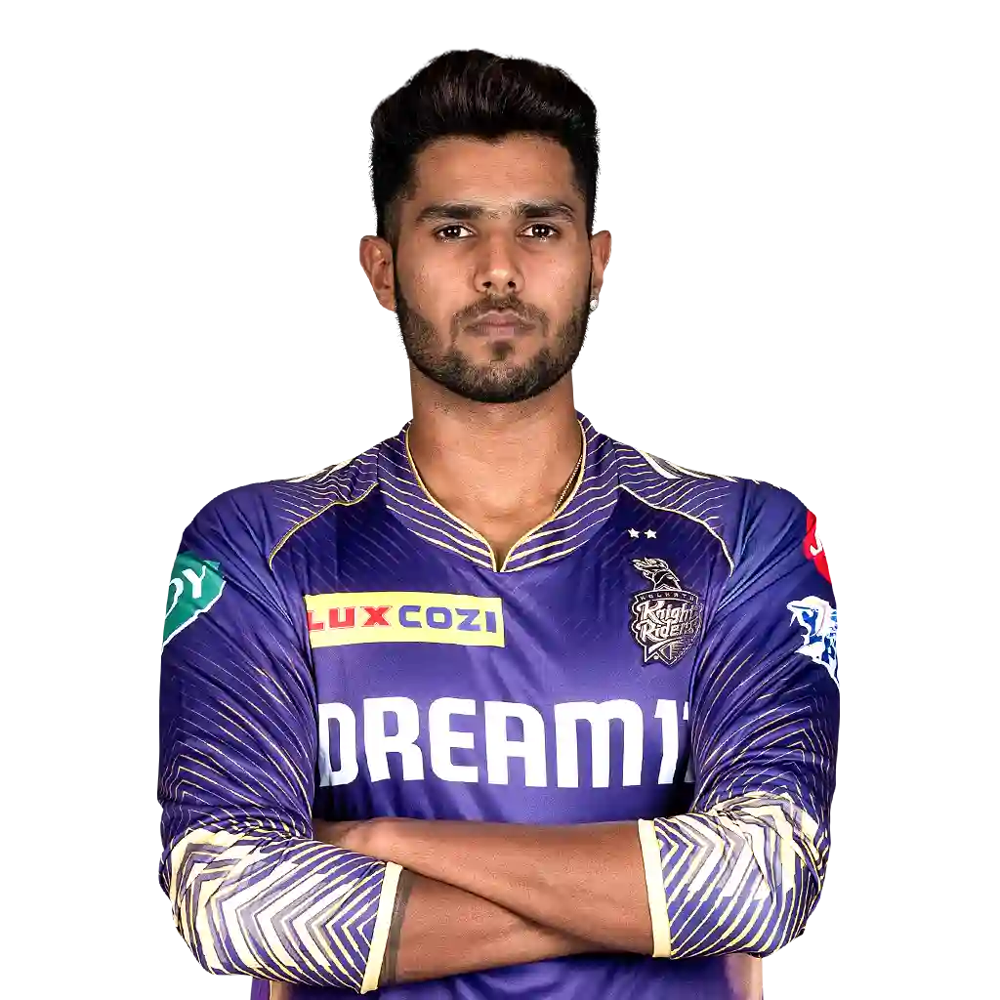

-
dhoni
- sakshi
- ziva
- harshitRana
- patCummins
- rohitSharma
- shubmanGill
- viratKohli
- dhoni
- harshitRana
- patCummins
- rohitSharma
- shubmanGill
- viratKohli
- Dhoni
-
dhoni born 7 July 1981 is an Indian professional cricketer who plays as a right-handed batter and a wicket-keeper. Widely regarded as one of the most prolific wicket-keeper batsmen and captains, he represented the Indian cricket team and was the captain of the side in limited overs formats from 2007 to 2017 and in test cricket from 2008 to 2014. Dhoni has captained the most international matches and is the most successful Indian captain. He has led India to victory in the 2007 ICC World Twenty20, the 2011 Cricket World Cup, and the 2013 ICC Champions Trophy, being the only captain to win three different limited overs ICC tournaments. He also led the teams that won the Asia Cup in 2010, 2016 and was a member of the title winning squad in 2018.
- Harshitrana
-
rana born 22 December 2001is an Indian cricketer.[1] He plays for Delhi in domestic cricket and Kolkata Knight Riders in the Indian Premier League. He was born in a Hindu Jat family of Rana clan in Urban village Ghevra Delhi.[2][3] In February 2022, he was bought by the Kolkata Knight Riders in the auction for the 2022 Indian Premier League (IPL) tournament.[4] He made his Twenty20 debut on 28 April 2022, for the Kolkata Knight Riders in the 2022 IPL.[5][6] Harshit rana has won the Indian Premier League playing for Kolkata Knight Riders in 2024. He plays his first International debut match against Australia 2024 BGT series.
- Patcummins
-
patcummins (born 8 May 1993) is an Australian international cricketer who captains the Australia men's national cricket team in Test and One Day International cricket. He is also the current captain of Sunrisers Hyderabad in the 2024 Indian Premier League.[5] Cummins is widely regarded as an all-time great fast bowler in Test cricket and one of the finest fast bowlers of his generation. He is also known for being a aggressive lower-order batsman.[6][7][8] Cummins was a member of the Australian team that won the 2015 ICC Cricket World Cup, 2021 ICC Men's T20 World Cup, and was the winning captain of the 2021–23 ICC World Test Championship and the 2023 ICC Cricket World Cup.
- Virat
-
virat born 5 November 1988 is an Indian international cricketer who plays Test and ODI cricket for the Indian national team. A former captain in all formats of the game, Kohli retired from the T20I format following India's win at the 2024 T20 World Cup. He's a right-handed batsman and an occasional unorthodox right arm quick bowler. Kohli holds the highest IPL run-scorer record, ranks second in T20I, third in ODI, and stands the fourth-highest in international cricket.